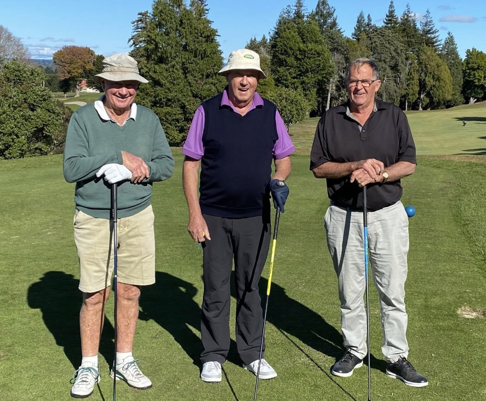

PEOPLE & CLUB LIFE
Jack Carter
Jack Carter started at the club cleaning members’ clubs as a twelve-year-old in 1957. After playing in Canada and returning to the Bay, he found himself organising Sunday junior golf. He recalls finding a new use for the Spalding Cup, turning it into the prize for a mixed under-19 tournament whose fields included future professionals.


Photograph and identification added 11 November 2026. Photograph date not supplied.
Life membersIndividual stories & familiesResident professionalsClub groupsTournaments & visiting golfersClubhouses & administrationVolunteers and Benefactors
Life Membership · 2019
Follow this person through the book
Open the linked web text to follow more names, or view the original page. References retain their 2014 context.
Related stories
Read the contributed account →
Record source: Club heritage contribution, 10 November 2026.